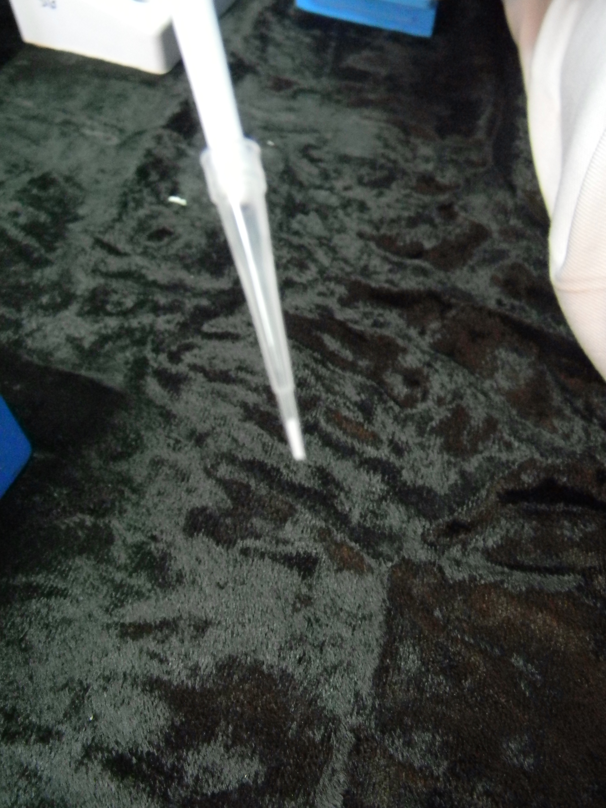

Theory
Protein identification through the MS is the one of the main step in proteomics and depends on several factors like selection the right MS instrument its sensitivity, protein detection range, choosing the right matrix depending upon the sample type. Matrix selection plays an important role in ionizing the sample ions, which are later separated and detected in MS instrument. Matrices are low molecular weight compounds, acidic and volatile in nature, with strong absorption property in UV/IR region. Different types of matrices are available in the market, with different properties and applications. Other than the matrix selection, preparation and spotting of the sample-matrix mixture on the sample plate is also very crucial, which greatly influence the quality of the peptide spectra. In this experiment we have discussed different types of matrixes; their properties and applications and various sample preparation procedures. Different steps involved in the sample preparations for MALDI-TOF MS analysis are discussed below.

Figure 1. Zip-Tip pipette tips for peptide enrichment; a zoom out figure illustrates the bed of chromatography media fixed at the end of the tip.
1. Peptide Enrichment:
In-gel digested protein samples are processed further using Zip-Tip pipette tips containing C18 or C4 media for enrichment of peptides prior to MS analysis. Zip-Tip pipette tip is a 10 µL pipette tip with a bed of chromatography media fixed at its end. It is used for concentrating and purifying peptides as well as removing salts and interfering agents. Samples are passed through activated Zip-Tips where they are captured in particular bed of chromatography media. Salts and interfering agents, detergents are washed and finally samples are eluted in a very small volume of solvent. While enrichment of samples using Zip-Tip, pipetting should be performed carefully.
2. Matrix selection:
After processing through Zip-Tips the samples are subjected to mass-spectrometric analysis and the first step in MALDI-TOF analysis is the selection of appropriate matrix for the sample. The matrix selection mostly depends on the sample type, molecular weight of the target to be analyzed. Different types of matrix are available in the market, with different properties and various applications. Selection of suitable matrix for a specific sample is very important, which can be narrowed down depending upon the properties and functions of the matrix.
Properties of Matrix
- Matrices are low molecular weight organic compounds having low vapour pressure and volatile nature.
- Most of the matrices are acidic in nature, so that it can easily excite photon and ionize the target for analysis. Few basic matrices are also available.
- Matrices have strong absorption abilities in UV and IR region, so that it can absorb energy from the laser source and excited to release photons for ionization.
The main functions of matrix include:
- Matrix enhances the crystallization of analyte and leads to co-crystallization along with analyte molecules.
- Matrix absorbs energy from laser source and converts both matrix and analyte into gas phase.
- Matrix transfers the absorbed energy from the laser to analyte molecules and helps in its ionization. The analyte molecules in the form of charged ions start moving in the MS, and later get separated from eachother followed with detection at the end.
- α-cyano-4-hydroxycinnamic acid (α-cyano): is a hard matrix, not soluble in water and well soluble in organic solvents, transfer lot of energy during desorption and ionization.
- Sinapinic acid: is a soft matrix, used in analysis of high mass proteins and transfers less energy, fragmentation formed are smaller very much suitable for measurement of proteins.
- 2,5-Dihydroxybenzoic acid (DHB): is often used for peptides, tolerant towards salts and detergents and the resolution obtained is very less as compared to the above mentioned two matrices.
Table 1. List of the different commercially available matrix and their applications:
3. Matrix preparation:
During matrix preparation our main aim should be to obtain a homogenous layer of matrix crystals containing well distributed analyte solution. To obtain the best result both organic as well as aqueous solvent are used along with ultra pure water. Organic solvents enhance the solubilization of hydrophobic side chains in protein or in nucleotides and aqueous solution helps in hydrophilic region. Matrix preparation is done by mixing matrix into a suitable solvent and vortexing for few minutes to dissolve it properly.
4. Sample and matrix deposition:
There are many approaches for deposition of sample and matrix on MALDI plate. People perform different methods of deposition which depends on the sample concentration and individual usage flexibility.
- In dried-droplet loading approach, mostly, sample and matrix is mixed in microcentrifuge tube, the mixture is deposited directly on to the MALDI plate and left for drying. In case if the protein loadis more this method can be proffered. Here spotting step on the plate is very easy, the analyte comes direct in contact with laser and the ionization step is very effective.
- In droplet spotting method, sample solution is placed on top of the matrix solution over the plate, so that the mixing happens within the drop. To avoid sample losslike in dried-droplet, this method is used. In this method, mixing may be uneven in some cases the liquid may come out of the spot boundary.
- In sandwich process, first a small amount of matrix is deposited on the plate followed by protein sample and then again matrix is added on the previously spotted mixture. In most of the cases sandwich method is used for sample and matrix deposition. The idea behind this is to make matrix excited even before the laser starts firing the analyte. As soon as the analyte are exposed to the laser they will take up the photons released from the matrix. In this method samples not remain in direct the contact of laser, less sample volume can be used.


Figure 2. Deposition of sample and matrix on MALDI plate, care should be taken during pipetting so place the liquid mixture uniformly within the spot boundary.

Reagents:
- Zip-Tip
- Acetonitrile (ACN)
- Trifluoroacetic acid (TFA)
- Spotting matrix (α-Cyano-4-hydroxycinnamic acid)
- Calibration mix
- Protein sample
A. Processing of samples using ZipTip:
Equilibration: During matrix preparation our main aim should be to obtain a homogenous layer of matrix crystals containing well distributed analyte solution. To obtain the best result both organic as well as aqueous solvent are used along with ultra pure water. Organic solvents enhance the solubilization of hydrophobic side chains in protein or in nucleotides and aqueous solution helps in hydrophilic region. Matrix preparation is done by mixing matrix into a suitable solvent and vortexing for few minutes to dissolve it properly.
Loading: Load the sample onto the ZipTip by pipetting 5-10 µL sample up and down 10-15 times and discard the liquid.
Washing: Wash the C18/C4 tip with 3 x 10 µL of 0.1% TFA to remove salts.
Elution: Elute the sample from the ZipTip with 50% ACN in 0.1% TFA or elute directly into the matrix (e.g. CHCA in 70% ACN/0.1%TFA).
B. Sample preparation and spotting:
i) Matrix and standard solution preparation:
Choose the appropriate matrix depending on the MW of the protein:
Matrix Selection:
| Samples | Matrix |
|---|---|
| Peptide < 10kDa | α-Cyano-4-hydroxycinnamic acid(CHCA) |
| Protein < 10kDa | a. Sinapinic acid b. Super DHB* |
| Polymer | a. α-Cyano-4-hydroxycinnamic acid(CHCA) b. 2,5 dihydroxybenzoic acid(DHB) |
| Glycosylated protein | Super DHB* |
Prepare the matrix solution in appropriate solvent [5 mg of alpha-cyano in total of 0.5 mL solution containing 0.2 mL of 0.1% TFA and 0.3 mL of 100% ACN].
Prepare standard solution or Pepmix by mixing the 10 µL (10pmoles/µL) of each peptide or protein.
(ii) Standard spotting:
- Deposit 0.5 µL of matrix solution onto the spot plate, leave for 10 sec and remove the excess amount.
- Add 0.5 µL of pepmix onto matrix solution and add 0.5µL of matrix solution again onto the sample (sandwich method). Repeat this step for standards on the other spots. Each spot of standard must be surrounded with sample spots.
- Keep the plate in drier for 30 min. Dried spots should have a uniform appearance and be off-white to slightly yellow in colour.
Sample spotting:
- Deposit 0.5 µL of matrix solution onto the spot, leave for 10 sec and remove the excess if required.
- Add 0.5 µL of sample onto the matrix solution and add 0.5 µL of matrix onto sample (sandwich method). Repeat this step for other samples. Care should be taken to spot next to standard spots.
- Keep the plate in drier. Dried matrix should have a uniform appearance and be off-white to slightly yellow in colour.
- Keep a record of spot positions for standard and samples for further tracking.
- After drying insert the plate in MALDI instrument. MALDI instrumentation procedure has been discussed in the next experiment (Experiment 6).
 |
|||
| ZipTip box | ZipTip | ZipTip activation | Washing |
{kind=link}
{kind=link}
{kind=link}
 |
 |  |
||
| Sample up-take | Elution | ZipTip | ZipTip | ZipTip box |
{kind=link}
{kind=link}
{kind=link}
| Drying matrix and sample for analysis | MALDI plate | Matrix deposition | Sample deposition |
{kind=link}
{kind=link}
{kind=link}
{kind=link}
| Sample preparation for MALDI analysis | Human Serum and Tissue | Plant Tissue Sample | Microbial Sample | Gel-based Proteomic Technique-2DE/PAGE |
{kind=link}
{kind=link}
{kind=link}
{kind=link}
{kind=link}
 |
 |
||||
| Gel-free based Labelling Techniques: ITRAQ/SILAC | In Gel Protein Digestion | In Solution Protein Digestion | Examples of MALDI Matrixes | MALDI Ionization Source | MALDI-TOF-TOF MS Data Analysis |
{kind=link}
{kind=link}
{kind=link}
{kind=link}


References :
Journals:
1. Baldwin MA. Protein identification by mass spectrometry: issues to be considered. Mol Cell Proteomics. 2004; 3, 1-9.
2. Dave KA, et al. Preparation and Analysis of Proteins and Peptides Using MALDI TOF/TOF Mass Spectrometry. Curr Protoc Protein Sci. 2011; Chapter 16:Unit16.13.
3. Karas M, et al. Ionization in matrix-assisted laser desorption/ionization: singly charged molecular ions are the lucky survivors. J Mass Spectrom. 2000; 35, 1-12.
4. Shevchenko A, et al. In-gel digestion for mass spectrometric characterization of proteins and proteomes. Nat Protoc. 2006; 1, 2856-2860.
5. Granvogl B et al. Sample preparation by in-gel digestion for mass spectrometry-based proteomics. Anal Bioanal Chem. 2007; 389, 991-1002.
6. Huynh ML et al. Tryptic digestion of in-gel proteins for mass spectrometry analysis. Methods Mol Biol. 2009; 519, 507-513.
7. Chen X et al. Sample preparation for MALDI mass spectrometry using an elastomeric device reversibly sealed on the MALDI target. Anal Chem; 2006, 78, 6160-6168.
8. Steven L. Cohen and Brian T. Chait, Influence of Matrix Solution Conditions on the MALDI-MS Analysis of Peptides and Proteins, Anal. Chem; 1996, 68,31-37.

Instructors’ assignment:
Course instructors should explain the basic principle and necessity of each steps associated with MALDI sample preparation and play the animation in class before providing the detailed experiment protocol. Once the students become familiar with the overall procedure they can be evaluated through the related questions provided under “Quiz” and “Assignment” sections.
Assignment for students:
Students can click on simulator window to run the animation and there are provisions for the learners to participate actively for different steps of MS sample preparation by using interactive animations. Students can click on micropipettes, reagents, equipments etc. using the computer mouse during different steps of the experiment. Students should read the references provided in “Reference” section to further advance their knowledge.
Questions:
- What is ZipTip? How it works?
- What is the purpose of Zip-Tipping prior to MS analysis?
- What are the different reagents required to perform Zip-Tipping procedure?
- What is the basic principle of sample enrichment using Zip-tips?
- What is the role of matrix during sample ionization?
- What are different types of matrix normally used for MALDI spotting?
- Which matrix is preffered for small molecular weight peptides (< 10kDa)?
- Which solvent is used for matrix preparation?
- What are the properties of good matrix?
- What are the different methods of sample spotting during MALDI-TOF analysis?
- Which factors affects the selection of matrix?